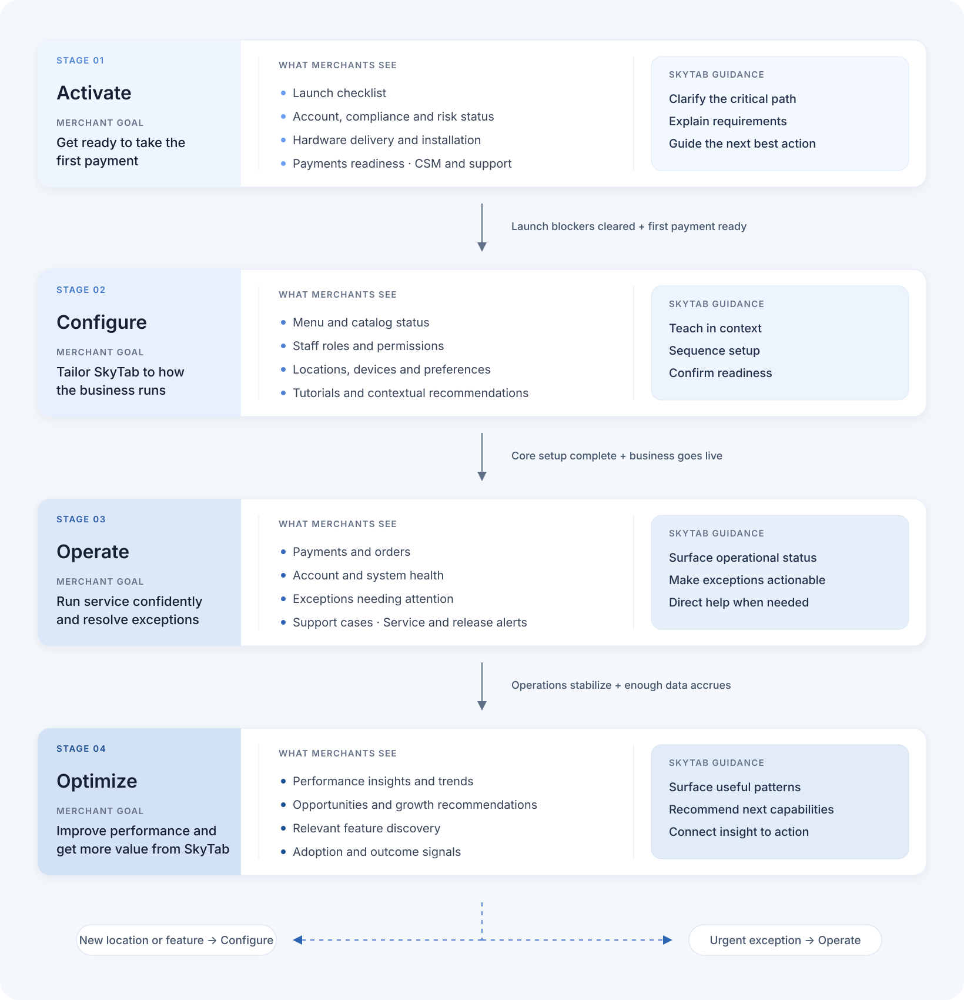

Merchants in Different States Need Different Experiences
The Business Challenge
SkyTab merchants exist in vastly different states throughout their lifecycle, from pre-launch setup to mature operations, yet the MX Hub interface treated all merchants the same. This one-size-fits-all approach created friction, confusion, and missed opportunities for engagement at critical moments.

Three distinct merchant states required different experiences:
State 1: Merchant is Launching
Merchants preparing for launch need to:
- Complete basic setup requirements
- Access critical launching information (scheduled install date, menu programming status)
- Connect with their Customer Success Manager (CSM)
- Handle pre-launch activities (rescheduling, file uploads, CSM coordination)
State 2: Merchant Just Completed Setup (Pre-live)
Merchants who completed required setup but haven't gone live yet need to:
- Complete additional feature configuration
- Learn about the SkyTab system through tutorials
- Stay informed about SkyTab releases
- Prepare for launch day
State 3: Merchant Has Been Live
Established merchants with operational systems need to:
- Access real-time data and dashboards
- Set up new features as they're released
- Configure features their business newly needs
- Continue learning about system capabilities
- Stay updated on releases
The Opportunity
By creating a state-aware system that adapts to merchant lifecycle stages, we could:
Reduce cognitive load by showing only relevant information
Accelerate time-to-value for new merchants
Improve feature adoption across all merchant segments
Create a more engaging, helpful experience that grows with the merchant
Creating State-Aware Experiences
Guiding Principles
1. State-Aware, Not State-Gated
The interface adapts to merchant state but never blocks access to information. Merchants can always explore, but we guide them to what matters now.
2. Progressive Disclosure
Surface critical information first, then layer in additional capabilities as merchants are ready for them.
3. Build Confidence Early
Especially for launching merchants, every interaction should reduce anxiety and build confidence in the system.
4. Data as Engagement
For live merchants, make data instantly useful and actionable, not just informative.
Research & Discovery


Strategic Decisions
Multi-State Wizard System
Created a dynamic wizard that changes content, tone, and actions based on merchant lifecycle state:
Pre-launch
Task-oriented with deadlines and CSM information
Pre-live
Education-focused with system tutorials
Live
Dashboard-first with feature discovery
Illustration System (Collaboration with Trey Ingram)
Worked with illustrator Trey Ingram to develop a cohesive illustration system that:
State-Adaptive Dashboard
How the dashboard adapts
SkyTab changes what merchants see as they move from setup to daily operations and growth.
Merchant objective
Understand what is required to launch and resolve blockers quickly.
Dashboard response
- Prioritizes launch-critical tasks
- Surfaces hardware delivery and readiness
- Connects merchants with launch support
Moves forward when
The merchant is ready to configure the business.
Merchant objective
Complete the setup needed to take orders with confidence.
Dashboard response
- Guides menu and location setup
- Clarifies team roles and permissions
- Tracks progress toward going live
Moves forward when
The business begins taking live orders.
Merchant objective
Keep daily service running and address urgent issues first.
Dashboard response
- Elevates orders and system health
- Flags issues that need attention
- Keeps common actions within reach
Moves forward when
Enough operating data exists to reveal useful patterns.
Merchant objective
Use performance signals to improve operations and grow.
Dashboard response
- Highlights trends and opportunities
- Recommends relevant SkyTab features
- Connects insights to clear next actions
Adapts continuously
New needs can return merchants to Configure or Operate.
ActivateClear launch blockers
Merchant objective: Understand what is required to launch and resolve blockers quickly.
Dashboard response: Prioritized tasks, hardware readiness, and launch support.
Moves forward when: the merchant is ready to configure the business.
ConfigureFinish essential setup
Merchant objective: Complete the setup needed to take orders with confidence.
Dashboard response: Menu, location, roles, permissions, and go-live progress.
Moves forward when: the business begins taking live orders.
OperateRun the business reliably
Merchant objective: Keep daily service running and address urgent issues first.
Dashboard response: Orders, system health, urgent exceptions, and common actions.
Moves forward when: operating data begins to reveal useful patterns.
OptimizeFind opportunities to grow
Merchant objective: Use performance signals to improve operations and grow.
Dashboard response: Trends, opportunities, relevant features, and recommended actions.
Adapts continuously: new needs can return merchants to Configure or Operate.
View the complete lifecycle map

Design Iterations

Final Execution & Outcomes
New Merchants Onboarding Wizard
Primary Focus: Task completion and preparation
Key Features:
- State-aware wizard that adapts content and tone based on merchant lifecycle stage
- Additional setup wizard for optional features
- Tutorial library with video walkthroughs
- Release notes and what's new
- Community resources and support links

Dashboard for New Merchants
Primary Focus: Education and feature discovery


Dashboard for Existing Merchants
Primary Focus: Data, insights, and ongoing optimization


Feature Modules
Primary Focus: Feature discovery and activation
Key Features:
- Feature setup hub for new capabilities
- "New" badge system driving awareness of recently released capabilities
- Contextual feature discovery based on merchant needs
- Streamlined activation flows for Value-Added Services
The system includes multiple feature modules for different merchant needs. Below is an example of the "Online Ordering" module activation flow, demonstrating how merchants can discover, configure, and launch new capabilities:


Try the AI Prototype
Explore the end-to-end onboarding flow, from account setup through the adaptive Customer Hub dashboard.
Key Takeaways
State-Aware Architecture
Designing for multiple states from the start created a cohesive system that scaled to 11,000+ merchants while reducing cognitive load.
Visual Communication
Illustrations with Trey Ingram became navigation tools, helping merchants orient themselves across lifecycle transitions.
Error State Priority
Comprehensive error handling upfront contributed to 90% bug resolution rate and velocity exceeding new reports.
Real Data Validation
Using live merchant data revealed opportunities and drove 18,000+ feature adoptions through contextual value.

Core Insight
Design for the user's context, not your convenience. By adapting the experience to merchant lifecycle stages, we created a system that serves merchants where they are, resulting in measurable impact across onboarding, adoption, and satisfaction.